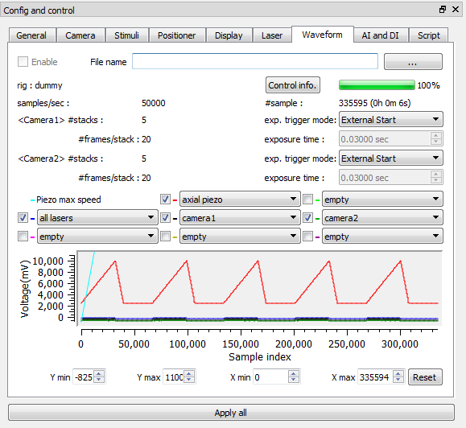

Waveform tab
- Enable : makes the waveform control mode enable. If disalbed, the parameter control mode is selected.
- File name :selects a .json custom waveform file.
- Control info. : brings up pop up window which includes a list of control names and assigned DAQ channels.
- exp. trigger mode : selects a exp. trigger mode of this waveform control.
- waveform display controls : enables us to select which waverform and to set a x axis interval or a y interval to display (only display purpose).
